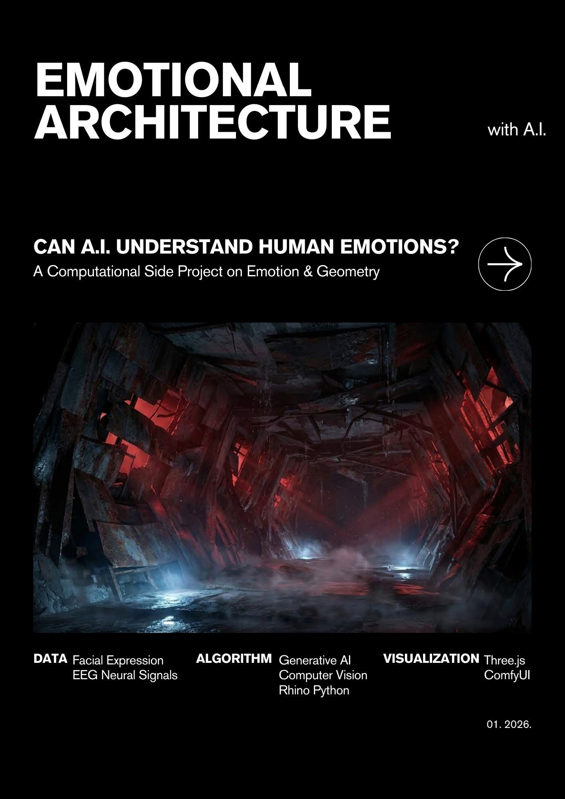

01
Concept to Form
// ARCHITECTURE x CODE
건축 스튜디오의 문제를 코드로 해석하고, 코드 실험을 다시 공간 전략으로 연결하는 하이브리드 디자이너 포지셔닝을 한 눈에 보여주는 데모 레이아웃입니다.
01
Concept to Form
02
Form to Logic
03
Logic to Experience
건축 프로세스와 개발 프로세스를 하나의 타임라인에서 병렬로 보여주기
슬라이더를 움직여 네 포지셔닝을 실시간으로 조합하고, 프로젝트 강조 포인트를 바꿔보는 인터랙션
72
68
SYNTHESIZED POSITION
설계 의도를 데이터/규칙으로 변환해 형태와 경험을 동시에 최적화합니다.
REAL-TIME BLUEPRINT
Spatial weight 72 / Logic weight 68
기존 에셋을 활용한 더미 카드: 인터랙티브 랩 값에 따라 강조 카드가 달라집니다


Bridge Statement
도면/렌더 수준에서 끝내지 않고, 인터랙션과 규칙 시스템까지 설계한다는 메시지를 중앙에 배치.
Architectural Designer who prototypes with code
공간 전략을 알고리즘으로 번역해 빠르게 검증하고, 설계 의도를 디지털 경험으로 확장합니다.